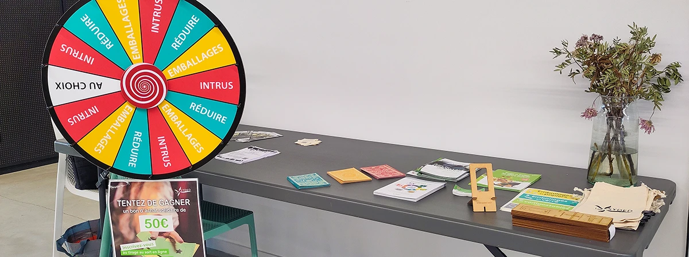
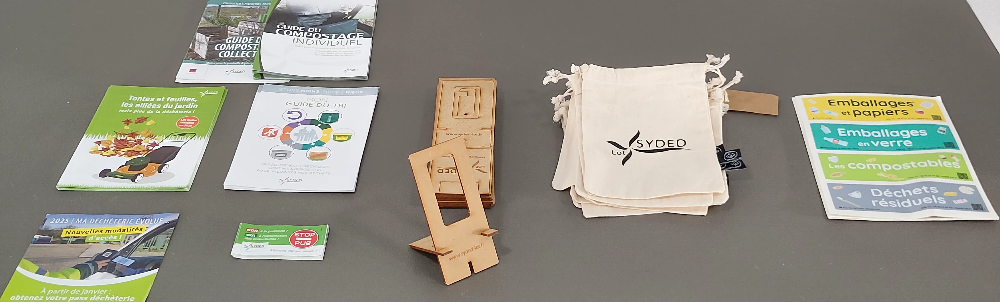
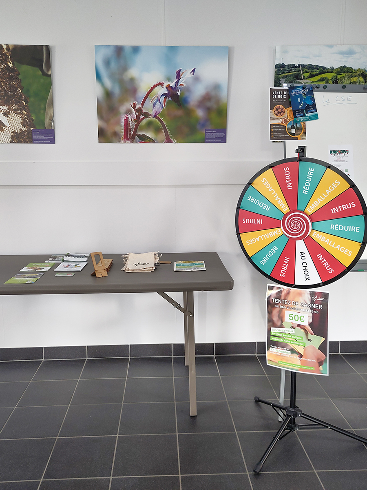
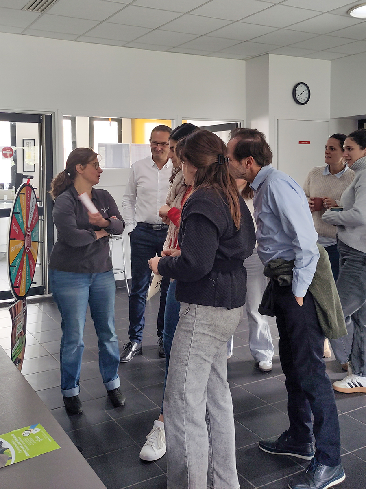
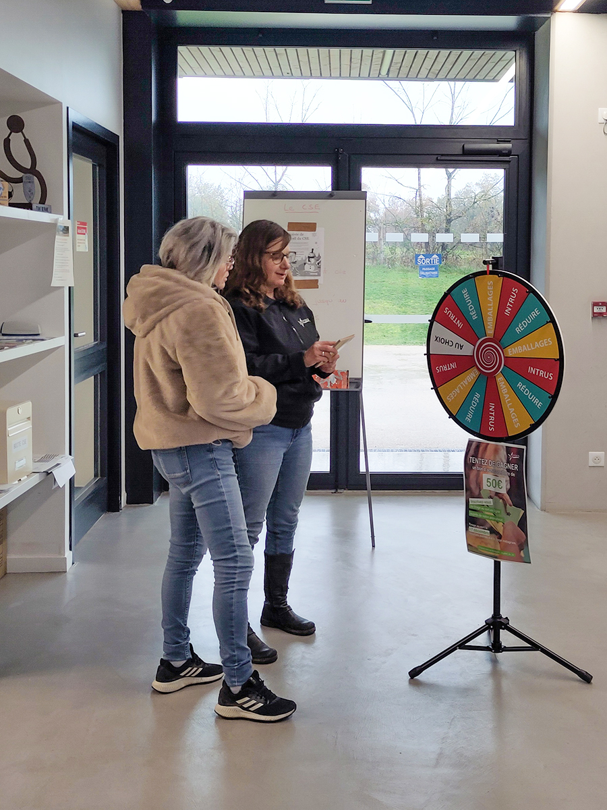

Objectif 2026 : zéro erreur de tri.
Challenge accepté ?
Bonjour à toutes et à tous,
A l’occasion de la Semaine Européenne de la Réduction des Déchets (SERD), du 22 au 30 novembre, Mme EON, animatrice prévention déchets pour le SYDED* vous a proposé une animation « Roue du Tri » lors de la pause déjeuner. Voici quelques témoignages et quelques photos pour illustrer l’animation à Causse-et-Diège et à Capdenac.
* Syndicat Département pour l’Élimination des Déchets : Depuis 1996, ce syndicat a pour vocation de gérer le traitement des déchets ménagers et assimilés du département du Lot.

«
Vous le savez, Nutergia s’engage depuis toujours pour la santé environnementale
qui est un élément central de la santé humaine. Au niveau opérationnel, vous êtes
nombreuses et nombreux à faire en sorte de diminuer l’impact environnemental de
nos déchets. Cette animation du SYDED ainsi que l’harmonisation de notre
signalétique tri a pour objectif de vous accompagner et vous encourager dans
la pratique du tri chez Nutergia, mais également chez vous.
»
Antoine Lagarde, Directeur Général
« Il est important que nos gestes du quotidien
traduisent notre engagement historique en faveur de l’environnement. Cela
commence par le tri de nos déchets, geste qui parait simple mais peut s’avérer
complexe au regard des interprétations et des connaissances de chacun.
L’intervention du SYDED était vraiment constructive. En-dehors de son aspect
ludique et pédagogique, l’animatrice s’est montrée disponible et accessible pour
répondre à mes questions. Maintenant, il n’y a plus qu'à mettre en pratique !
»
Delphine Daures, service Qualité
«
Je dirais que le tri est un défi quotidien et qu’il est donc important d’y être
sensibilisé. Pouvoir le faire de manière ludique facilite l’accès au sujet et
encourage chacun à s’informer.
»
Amaury Mathieu, service Commercial
« Avec des connaissances et une pratique
personnelle différentes, nous sommes venues toutes les 2 par curiosité découvrir
l’intervention du SYDED venu nous présenter les vertus du tri. Nous y avons
trouvé une ambiance détendue avec toujours à l’esprit l’apprentissage de bonnes
pratiques à adopter pour bien réaliser son tri. Les outils éducatifs
et ludiques ont permis des échanges fluides et agréables dans le
groupe. De plus, l’intervenante s’est montrée disponible et claire dans les
explications. »
Justine Blanc & Marie-Emilie Jean, service Ressources Humaines
« À l’occasion de la semaine européenne de
réduction des déchets, une animatrice du SYDED est venue nous sensibiliser de
manière ludique au tri et traitement des déchets : un bon moyen pour tester nos
connaissances, faire évoluer nos pratiques et agir collectivement.
»
Céline Ravello, service Conseil Santé

Vous pouvez tester votre niveau de connaissances sur le tri sélectif avec ce lien ici .
Pour rappel, Nutergia trie et met en place une signalétique afin de simplifier et d’harmoniser les zones de tri internes.


Pour toutes questions ou remarques n’hésitez pas à me contacter sur l’adresse
 rse@nutergia.fr.
rse@nutergia.fr.
Merci à toutes et à tous pour votre lecture.
Bon tri à toutes et à tous !
Faustine Lagarde


